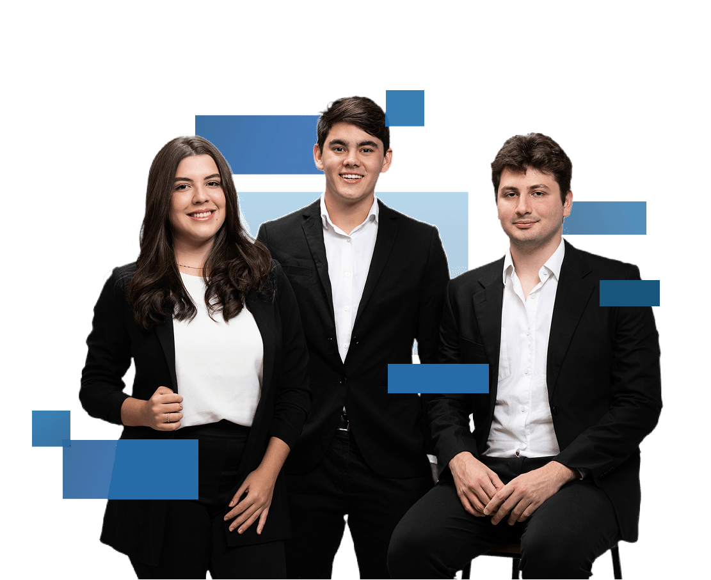
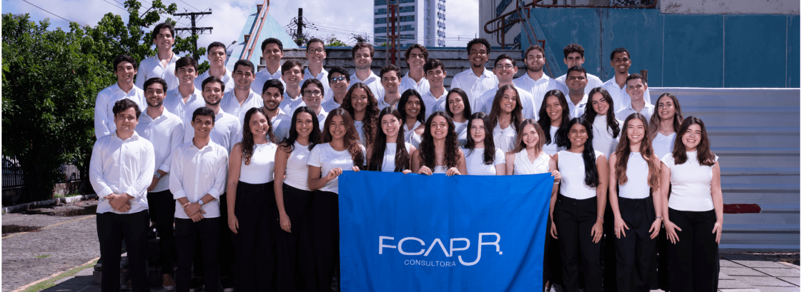
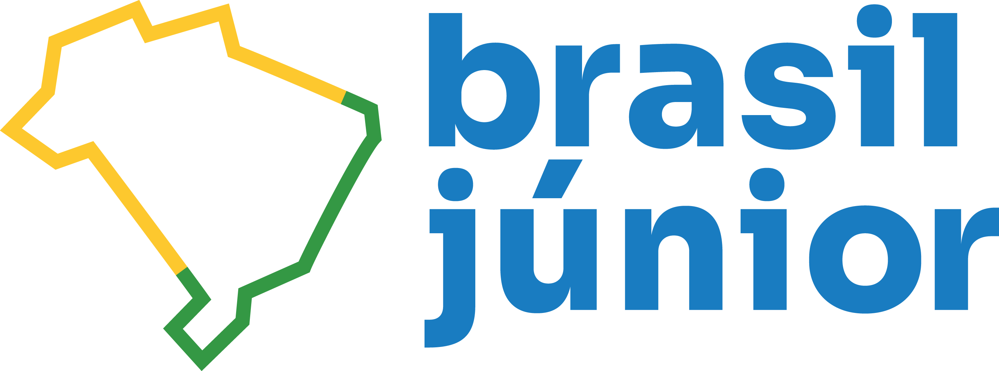

Consultoria empresarial PARA SEU NEGÓCIO!
Somos a FCAP JR., empresa júnior da Universidade de Pernambuco. Aplicamos soluções personalizadas em gestão empresarial para empresas que buscam evoluir com estratégia e resultados reais.

Profissionais jovens, capacitados e prontos para transformar o seu negócio.
Unimos conhecimento em administração e mentoria sênior para criar soluções em planejamento, processos e finanças que estruturam sua gestão e apoiam o crescimento.
Mais de 700 projetos e 36 anos de atuação, com estratégias sob medida para micro e pequenas empresas.

Soluções.
Consultoria em mapeamento de processos para identificar falhas, redesenhar fluxos e implementar eficiência em pequenas empresa
01Mapeamento de Processos
Diagnóstico e análise de fluxos internos
Mapeamos processos organizacionais para identificar gargalos, retrabalho e etapas que reduzem a eficiência. Aplicamos metodologias como BPMN 2.0 e fluxogramas para propor soluções sob medida.
Eficiência operacional com redesenho de processos
Redesenhamos fluxos internos com foco em agilidade e clareza. A consultoria entrega melhorias práticas que reduzem custos e aumentam a produtividade da sua operação.
02Plano de Negócio
Construção de modelo de negócio estratégico
Auxiliamos na estruturação do seu plano de negócios, com análise de viabilidade, público-alvo, proposta de valor e diferenciais competitivos. Ideal para empresas em fase de validação ou expansão.
Planejamento financeiro e projeções
Desenvolvemos projeções de receita, custo e lucratividade, além de planos operacionais. Isso oferece uma visão clara de futuro e embasa decisões estratégicas com dados reais.
03Gestão de Pessoas
Diagnóstico de clima e cultura organizacional
Avaliamos a cultura interna da empresa por meio de pesquisas com equipes, análise de clima e entrevistas, propondo ações de melhoria para engajamento e retenção.
Estruturação de times e funções
Organizamos a estrutura de cargos e responsabilidades, com foco em desempenho, comunicação e crescimento sustentável da equipe. Também sugerimos planos de desenvolvimento individual.
04Marketing e Vendas
Posicionamento de marca e estratégia digital
Desenvolvemos estratégias de marketing digital para fortalecer sua marca, melhorar sua comunicação e atrair novos clientes. Inclui diagnóstico de canais, tom de voz e branding.
Estruturação do funil comercial e prospecção
Apoiamos a criação de funis de vendas, automações e abordagens personalizadas para atrair, nutrir e converter leads. O foco está em melhorar a taxa de conversão e vendas com previsibilidade.
05Pesquisa de Mercado
Entenda seu público e seus concorrentes
Realizamos pesquisas quantitativas e qualitativas com foco em perfil de consumidor, preferências, hábitos de compra e comportamento. Também analisamos o mercado e players do seu setor.
Análise de dados para tomada de decisão
Transformamos dados em insights úteis para definir estratégias de produto, precificação e comunicação. As informações são apresentadas em relatórios objetivos e acionáveis.
06Gestão Estratégica
Definição de metas e indicadores (OKR & KPI)
Ajudamos sua empresa a criar metas claras, mensuráveis e alinhadas ao propósito do negócio. Utilizamos ferramentas como OKRs e KPIs para acompanhar a execução com disciplina.
Planejamento e execução de estratégias
Estruturamos planos estratégicos com objetivos de curto, médio e longo prazo. Facilitamos a execução com metodologias ágeis e ciclos de avaliação e melhoria contínua.
Empresas que confiaram na FCAP JR. e os resultados que alcançaram
Consultorias sob medida para empresas de diversos setores, com foco em gestão e resultados mensuráveis.


Metodologia FCAP JR.
Aplicamos uma metodologia clara em cada projeto de consultoria, desde o diagnóstico até a mensuração dos resultados. São 4 etapas com foco em eficiência: entender, planejar, executar e entregar valor ao cliente
01Comunicação
Valorizamos a clareza e a transparência na troca de informações. Para garantir que todos estejam alinhados, utilizamos reuniões semanais, grupos de WhatsApp para facilitar a comunicação instantânea e uma documentação acessível e organizada. Isso é algo que surge a partir da utilização do método PMBOK, que define os processos internos para existir maior sinergia e entendimento entre as equipes.
02Inovação
Comprometemo-nos a agregar valor aos projetos por meio de soluções criativas. Nossa equipe participa regularmente de treinamentos e workshops que mantêm todos atualizados com as melhores práticas e novas tecnologias. Ferramentas de Design Thinking, como o PDCA (Plan, Do, Check, Act), são utilizadas para avaliar e ajustar as soluções durante o projeto.
03Adaptabilidade
Acreditamos que a flexibilidade é crucial para o sucesso de qualquer projeto. Nossa equipe adota metodologias ágeis, como o Scrum, permitindo ajustes rápidos ao longo do processo de execução. Além disso, temos uma gestão de riscos eficaz e um sistema de feedback contínuo que garante que possamos responder rapidamente a imprevistos e mudanças, mantendo os projetos relevantes mesmo em cenários incertos.
04Resultado
Nosso objetivo final é sempre superar expectativas e garantir o sucesso dos projetos. Para isso, estabelecemos metas claras e mensuráveis (SMART), acompanhadas por indicadores-chave de desempenho (KPIs) que monitoram o progresso do projeto. Durante a execução, fornecemos relatórios para total visibilidade de cada etapa. Após a conclusão, realizamos avaliações como o Net Promoter Score (NPS).
Seu diagnóstico estratégico é 100% gratuito.
Escolha uma data, indique o horário desejado e preencha seus dados para solicitar uma reunião com nossa equipe.
Parceiros
Organizações que apoiam nossa equipe e fortalecem uma consultoria jovem, acessível e transformadora.

Conteúdo para quem quer fazer gestão com estratégia
No nosso blog, compartilhamos insights sobre gestão, planejamento, marketing e finanças para pequenas empresas. Tudo gratuito e direto ao ponto.